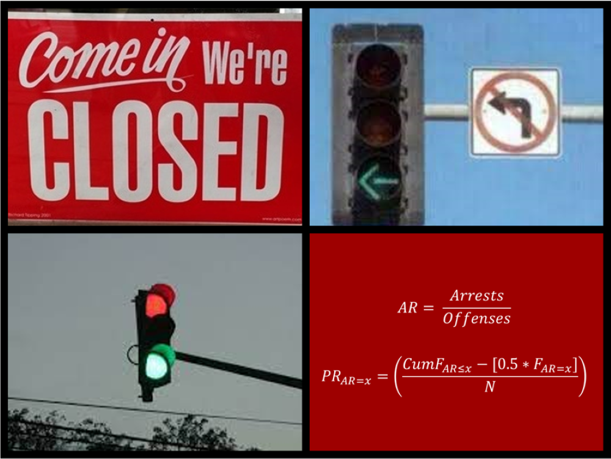
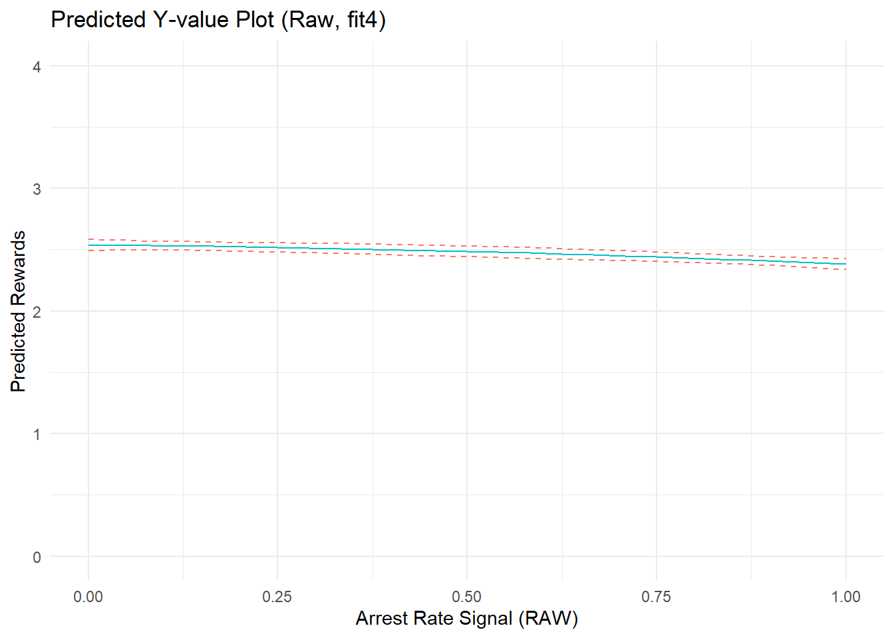

Mixed Signals: Use Ratios and Percentile Scores Carefully (and Sparingly)

Motivation
I typically spend several hours over a couple days on manuscript reviews. Sometimes, I even provide files containing analyses of simulated data that I think will help the authors improve their research. All too often, I will encounter a published version of the paper later and feel dismayed at my wasted time upon seeing the manuscript virtually unchanged with reviewer suggestions largely ignored. Of course, authors strategically ignoring reviewers rather than revising is a well-known issue with the academic peer review process. The issue is exacerbated by academic structures promoting the existence of too many journals and incentivizing people to publish too many papers.1 In fact, these types of reviewing experiences were an impetus for me starting a blog in the first place; I figured that my reviewing efforts might not be wasted if I can turn some of their content into blog posts that a few others might appreciate (e.g., see footnote 5 here).
This particular post is motivated by a peer review “success” story (at least from my point of view) related to a paper on “arrest rate signals” recently published in the Journal of Criminal Justice by Sultan Altikriti, Damon Petrich, and Claudia Anderson. After I reviewed an earlier draft for a different journal, the first author contacted me (I sign all my reviews and encouraged them to reach out if desired) to inform me that they revised their analysis and manuscript in light of my suggestions (e.g., added a DAG; adjusted for ratio confounding by constituent components; removed percentile transformation). Kudos!
The primary motivation for this post is to communicate a couple of the key issues in my review to raise awareness among others using ratio and percentile score variables in their own work. Yet, an important secondary motivation is to provide a behind-the-scenes glimpse of the peer review process that explicitly acknowledges these authors for engaging in productive scholarly exchange. In doing so, perhaps we will promote norms in criminology encouraging open and serious engagement with criticisms raised in pre- and post-publication review and discouraging authors from ignoring such criticisms. For similar reasons, some scientists call for widespread publication of peer reviews. Likewise, Elliot Temple argues some of the most important exchanges occur during peer review, yet are invisible to most scholars who only read the final published manuscript:
“The part where criticism is addressed instead of ignored is the key part of the debate. Having that key part take place in private means people can’t see how good the key part of the critical discussion is, and therefore don’t have the information required to judge it. If it is good, they can’t learn from it, or use it as an example to model their own debates after. When people hide the information you need to make an informed judgment, you should be distrustful and demand transparency, rather than trusting their expertise.”
Now, let’s get to those issues about ratio and percentile variables that Altikriti and colleagues recently addressed behind the scenes when revising their manuscript for publication.
Measuring the “arrest rate signal”
Rather than reproducing my full review here, I will focus specifically on issues raised related to ratio variables and percentile rank score transformations. In doing so, I will pull quotes from my review of the earlier draft. For instance, here is my brief summary of the paper’s content and potential contribution:
“The current study uses longitudinal data from the Pathways to Desistance data to examine the functional form of the relationship between youth’s “arrest rate signal” (aka, “experienced certainty of arrest”) and youth’s self-reported perceptions of rewards and costs of crime. The authors are investigating a theoretically and practically important topic, and they have delivered a well-written paper with carefully described methods and results. I especially appreciate their goals of direct investigation and precise estimation of the potential effects of past experiences with crime and its consequences on the formation of perceptions of costs and rewards (aka, direct measurement of reinforcement and punishment processes). As the authors note throughout, this is a topic to which I have argued criminologists should devote more attention, so kudos to them for tackling this challenge.”
As in the published version, the authors were investigating possible nonlinear relationships between the arrest rate signal and perceptions of risk and reward. I argued the author’s percentile-transformed ratio measure of the arrest rate signal might be problematic for this type of investigation:
“To me, the most pressing issues with the current study as designed pertain to the focal predictor - the “arrest rate signal.” The original or raw version of this variable is measured simply as a proportion created by dividing the number of reported arrests by the number of reported offending behaviors in the past year (Arrests/Offending). Conceptually, the arrest rate signal (hereafter ARS) is a proxy for the “experienced certainty of arrest.””
…
“Measured in this way, higher values (closer to 1 on the original raw proportion metric) indicate a high reported probability of arrest given offending. Such scores mean youth experience arrest as a near-certain outcome of offending, thereby presumably increasing perceived costs and reducing perceived rewards of crime. In contrast, lower values (closer to 0) indicate a low reported probability of arrest given offending, meaning youth experience arrest as a highly unlikely outcome of offending, thereby presumably reducing perceived costs and increasing perceived rewards of crime.
Now, you should know that the authors did not invent the concept of an arrest rate signal nor its measurement as a ratio of experienced punishments (arrests) to punishable behaviors (self-reported offenses). Rather, their paper is the most recent in a line of studies investigating cognitive “Bayesian updating” of risk and reward perceptions (e.g., Matsueda et al. 2006; Anwar & Loughran 2011). I pointed this out in my review:
“To be clear, the theoretical concept and operational measure seem reasonable on their face. Also, I am aware that several studies that have used the same or similar measures, and the authors are merely extending upon past work using a somewhat commonly used measure. (For what it is worth, I also really [like] this literature; the early”Bayesian updating” paper is one of my favorites.) Thus, my feedback here is less about limits of this specific study and more about concerns with the general measurement and analytic approached adopted in this literature. I understand and regret that such feedback may be perceived as quite unfair to these specific authors; I hope my feedback might be somewhat helpful in improving research on this important topic anyway.”
Incidentally, I find this happens somewhat frequently when reviewing. That is, I will point out a perceived issue in the paper that I think might be a widespread issue in the underlying literature, which then puts the authors and editors in a tough (but clear) spot: They set out to contribute incrementally to a specific literature, and then I tell them to do something that I claim is better but is not common practice in that literature. In this light, I give even more credit to these specific authors, as the path of least resistance in such situations might simply be to move along and hope for a different reviewer at another journal. In any case, here is a summary of three core issues I raised:
“Succinctly, my primary concerns are summarized as: (1) Selection into sample and analysis may limit generalizability and cause selection-distortion artifacts; (2) Inability to address confounding by component parts of the ARS inhibits meaningful interpretation of results; and (3) Arbitrary transformation of ARS from a proportion into a percentile score artificially introduces nonlinearities into the focal relationships of interest. Each of these issues poses risks of generating (nonlinear) data artifacts that threaten the validity of the results and their current interpretations as estimates of potential functional form of the relationship between “experienced certainty” or the “arrest rate signal” (ARS) and perceptions of costs and rewards, which is the primary goal of the current study.”
Again, I will focus here on the last two issues (#2 and #3).2 For those interested in reading my narrative review describing these issues, follow this link to find an expandable section at the end of the blog. Otherwise, I will briefly summarize the issues again, so feel free to move on.
Beware ratios and percentile scores
Here is a brief summary of the two key issues addressed here:
Ratios
If you are estimating causal effects using a ratio measure of the “arrest rate signal” or “experienced certainty of arrest” (i.e., arrest/offending) on perceptions, then it is important to consider and account for the possibility of confounding due to plausibly distinct effects of arrest and offending frequencies on perceptions.
Statisticians have been warning about ratio variables for a very long time. A couple recent papers, one by Peter Tennant and colleagues and another by Mooldijk and colleagues explicitly address the issue of confounding by components of a ratio variable. Ratio variables potentially pose problems both as predictors and as outcomes, and it is particularly important to consider such problems when investigating causal questions (which most quantitative criminology studies do whether or not they admit it), irrespective of one’s theoretical interest in the ratio itself.
So, if you think a ratio variable is measuring something distinct from the constituent variables comprising the ratio, then you should be sure your design identifies the causal effect of that distinct “thing” in a way that isolates it (if possible) from any entangled causal effects of the constituent variables comprising the ratio measure. You should also consider whether you are actually interested in the interaction between the two components, and whether it is really appropriate to include an interaction term without estimating the conditional or “main” effects of its constituent components (in general, it is not). What is all this about interactions? Well, a ratio variable algebraically is equivalent to a multiplicative interaction between the numerator and a transformed denominator (Numerator x [1/Denominator])!
Percentiles
If you are investigating the functional form of a relationship between variables, such as the nonlinear effects of the arrest rate signal on perceived rewards of offending, then do not convert variable raw scores into percentile scores. In fact, it is wise to critically assess the consequences of any transformation, and you should usually avoid the use of percentile scores in any statistical setting in which metric scaling is assumed.
Percentile scores are popular in educational testing, bibliometrics, and some clinical domains, where researchers communicating with practitioners and public audiences appreciate their relatively intuitive interpretation (or should we say their intuitive misinterpretation?). Yet, converting variable raw scores to percentile rank scores generates a distribution of scores that, despite ranging from 0 to 100, are not equidistant and thus non-metric (i.e., non-interval) measures. Rather, percentile scores are ordinal values representing the rank ordering of particular raw scores in a specific sample. Likewise, percentile rank scores (and other variable transformations) will bake in distribution-dependent (i.e,. arbitrary) nonlinearities into your variables, meaning you could observe “false” nonlinear relationships, or fail to observe “true” nonlinear relationships, due to measurement artifacts introduced by percentile conversion. In fact, simple statistical operations are not permissible with percentile scores, including “calculating an average over a set of scores, or calculating a difference score between repeated assessments” (see de Beurs, Boehnke, and Fried 2022 for quote and more information. E.g., their paper also includes a sigmoid curve depicting the nonlinear relationship between standardized and percentile scores.)
If you are the “I’ll believe it when I see it” type, then perhaps you will appreciate the simple example using simulated data below (also from my review).
Example with simulated data
Load libraries & simulate data
Show code
#Load libraries
library(tidyverse)
library(here)
library(simstudy)
# https://cran.r-project.org/web/packages/simstudy/vignettes/simstudy.html
# https://kgoldfeld.github.io/simstudy/articles/simstudy.html
library(msm)
library(car)
library(ggplot2)
library(patchwork)
library(truncnorm)
library(see)
library(dagitty)
library(ggdag)
library(modelsummary)Below, I simulate data containing five variables:
- perceived rewards of crime, time 1 (
PercRew_t1), or the focal outcome - number of self-reported criminal offenses in past year, time 1 (
Offend_t1) - number of self-reported arrests in past year, time 1 (
Arrest_t1) - arrest rate signal, time 1, or focal predictor measured as
Arrest_t1/Offend_t1 - perceived rewards at time 0 (
PercRew_t0), or a lagged measure of the outcome to include as covariate
The data are simulated using the following DAG to guide causal relationships. Notice that I am generating data with distinct causal effects of offending and arrest on perceptions of rewards and explicitly without a distinct causal effect of arrest rate signal on perceptions.
Show code
#function to shorten arrows (edges)
# https://stackoverflow.com/questions/65420136/how-do-you-adjust-the-arrows-in-a-ggplot-of-a-ggdag
shorten_dag_arrows <- function(tidy_dag, proportion){
# Update underlying ggdag object
tidy_dag$data <- dplyr::mutate(tidy_dag$data,
xend = (1-proportion/2)*(xend - x) + x,
yend = (1-proportion/2)*(yend - y) + y,
xstart = (1-proportion/2)*(x - xend) + xend,
ystart = (1-proportion/2)*(y-yend) + yend)
return(tidy_dag)
}
#build dag (ignoring normative beliefs/"learned" cognitive content)
signalDAG <- dagify(
PercRew_t1 ~ PercRew_t0 + Offend_t1 + Arrest_t1,
Offend_t1 ~ PercRew_t0,
ARSig_t1 ~ Offend_t1 + Arrest_t1,
Arrest_t1 ~ Offend_t1,
exposure = "ARSig_t1",
outcome = "PercRew_t1",
coords=list(
x=c(PercRew_t0=1, Offend_t1=1, Arrest_t1=2, ARSig_t1=3, PercRew_t1=3),
y=c(PercRew_t0=2, Offend_t1=1, Arrest_t1=1, ARSig_t1=0, PercRew_t1=2)
)) %>% tidy_dagitty()
#shorten edges
signalDAG <- shorten_dag_arrows(signalDAG, 0.12)
#plot dag
signalDAG %>% ggplot(aes(x=x, y=y, xend=xend, yend=yend)) +
geom_dag_edges() +
geom_dag_text(color="#56B4E9") +
theme_dag() +
guides(fill = 'none', color = 'none') +
scale_y_continuous(expand=expansion(mult=c(0.2,0.2))) +
#change default expansion on y-axis min & max
ggtitle("Arrest Rate Signal to Rewards DAG") +
theme(plot.title = element_text(size = 12))In generating this DAG, I specified the arrest rate signal (ARSig_t1) as the causal “exposure” and perceived rewards (PercRew_t1) as the outcome to specify the (null) path between them as the focal estimate of interest.
As shown in the DAG, the ratio of frequency of arrests to offending, or the “arrest rate signal,” is a deterministic variable that is caused by its constituent parts. Offending is also specified as a causal antecedent of arrest, as offending (prototypically) precedes and motivates arrest. Also note that its constituent parts, frequency of offending and frequency of arrests, each cause perceived rewards of offending. This results in a classic confounding pattern, which means that identification and estimation of the causal effect - or, in this case, the non-causal null effect - of arrest rate signal on perceptions requires statistical adjustment for both the frequency of offending and arrests.
I can confirm this by usingggdag::ggdag_adjustment_setR() to find minimally sufficient adjustment sets. Put simply, this function shows the fewest number of adjustments needed to close all backdoors between the exposure (ARSig_t1) and outcome (PercRew_t1). (For a more detailed example, see Andrew Heiss’s blog).
Show code
ggdag_adjustment_set(signalDAG, shadow = TRUE) +
theme_dag() +
geom_dag_text(color = "black")As expected, to properly estimate the (non)causal effects of the “arrest rate signal” (ARsig_t1) on crime, I need to adjust for behavior (offending) and its consequences (arrest). Below, I will briefly illustrate some consequences of including only ARsig_t1 in models, as well as illustrate some things that we fail to uncover by not including its component parts (Offend_t1; Arrest_t1) in models instead.
It is also worth pointing out that, to estimate the (non)causal effect of arrest rate signal on perceptions, the DAG above indicates adjustment for past perceptions (PercRew_t0) is unnecessary with these simulated data. Of course, with real-world (not simulated) data and a sufficiently complex DAG, adjustment for past perceptions might permit adjustment for confounding by other unmeasured sources of heterogeneity.
Now, let’s use the causal data-generating process depicted in this DAG to simulate some data.
I start by simulating a “perceptions of reward at time zero” (PercRew_t0) variable from a truncated normal distribution using values inspired by a similar variable in the paper (i.e., mean=2.3, sd=2.5, min=0, max=10). From there, I draw from a Poisson distribution using a log link to generate values for offending behavior frequency at time one (Offend_t1) that are strongly conditional on prior perceived rewards of offending (B= 0.5). I then randomly sample or “assign” a number from 0 up to the case-specific maximum offending frequency to simulate an arrest frequency value (Arrest_t1). Arrest rate signal (ARsig_t1) is measured as the ratio of arrests to offending (Arrest_t1/Offend_t1) after dropping all cases with Offend_t1 = 0 (because we cannot divide by 0). Finally, for simplicity, the outcome variable - perceived rewards at time 1 (PercRew_t1) is drawn from a normal distribution of scores conditional on prior perceived rewards (B= 0.5), offending (B= 0.3), and arrests (B= -0.3). Finally, to reflect messy social science data, the outcome is also censored after the fact so that values less than zero are set to zero and values greater than 10 are capped at 10; doing this will introduce some nonlinearities due to data (e.g., measurement/modeling) artifacts that are not strictly due to the underlying causal model.
Some of you might wonder why I did not add a non-zero multiplicative interaction term (Offend_t1 x Arrest_t1) to simulate effect heterogeneity between offending and arrest on the linear estimation scale. After all, it is quite reasonable to expect the effect of offending on subsequent perceptions of rewards to vary across values of arrest; that is, the degree to which one perceives offending to be lucrative or worth the risks likely depends on whether and/or how frequently such behavior ends in arrest. If this logic sounds familiar - specifically, if it sounds like the logic underlying posited “arrest rate signal” effects, that is because it is! In fact, including a ratio measure of the arrest rate signal (or, for that matter, any other ratio) in a regression equation without also including its component parts essentially is equivalent to including an interaction term without estimating conditional effects (i.e., so-called “main effects”) of its constituent components. This is because, as noted earlier, a ratio variable algebraically is akin to an interaction between the numerator component and a transformed version of the denominator component (Arrest_t1 x [1/Offend_t1]).
Thus, by including neither a non-zero coefficient for a multiplicative interaction term nor for the arrest rate signal, the data are simulated without specifying an effect of the arrest rate signal (ARsig_t1) on the outcome (PercRew_t1), which means the focal causal estimate of interest should be null (B= 0) - assuming we correctly model the data-generating process.
Show code
#truncated normal distribution
#https://www.r-bloggers.com/2022/08/flexible-simulation-in-simstudy-with-customized-distribution-functions/
# trunc_norm <- function(mean, sd, lower, upper, color="009E73") {
# rtnorm(n = 1, mean = mean, sd = sd, lower = lower, upper = upper, color="009E73")
# }
# note - the above approach stopped working properly. switched to alt approach:
# https://www.rdatagen.net/post/2024-05-21-simstudy-customized-distributions/
rnormt <- function(n, min, max, mu, s) {
F.a <- pnorm(min, mean = mu, sd = s)
F.b <- pnorm(max, mean = mu, sd = s)
u <- runif(n, min = F.a, max = F.b)
qnorm(u, mean = mu, sd = s)
}
options(scipen=0, digits = 3)
set.seed(1138)
n <- 10000
#old approach to sim truncated normal dist
# def <- defData(varname = "PercRew_t0",
# formula = "trunc_norm(mean = 2.3, sd = 2.5,
# lower = 0, upper = 10)", dist = "nonrandom")
#new approach to sim truncated normal dist
def <- defData(varname = "PercRew_t0",
formula = "rnormt",
variance = "min = 0, max = 10, mu = 2.3, s = 2.5",
dist = "custom"
)
def <- defData(def, varname = "Offend_t1", dist = "poisson",
formula = "-.9 + (.5)*PercRew_t0", link = "log")
def <- defData(def, varname = "poisdist", dist = "poisson",
formula = ".8", link = "log")
simdat <- genData(n, def)
# summary(simdat)
# randomly sample Arrest_t1 values from 0 to maximum Offense_t1 value
simdat$Arrest_t1 <- sapply(simdat$Offend_t1 + 1, sample, 1) - 1
# if Arrest_t1 >16 then cap at 16 (0-16 item)
inds <- simdat$Arrest_t1 > 16
simdat$Arrest_t1[inds] <- 16
# summary(simdat)
# plot(simdat$Arrest_t1,simdat$Offend_t1)
# table(simdat$Arrest_t1,simdat$Offend_t1)
# Arrest rate signal measure requires dropping all cases with Arrest_t1 = 0 (cannot div by 0)
# problematic as not getting arrested sends meaningful signal!
simdat$ARsig_t1 <- simdat$Arrest_t1/simdat$Offend_t1
# summary(simdat$ARsig_t1)
# no arrest rate signal effect on PercRew_t1
addef <- defDataAdd(varname = "PercRew_t1", dist = "normal",
formula = "0 + (.5)*PercRew_t0 + (0.3)*Offend_t1 + (-0.3)*(Arrest_t1)",
variance = 1)
simdat <- addColumns(addef, simdat)
# summary(simdat)
# if PercRew_t1 < 0 or > 10 then cap in bounds (0-10 item)
inds <- simdat$PercRew_t1 < 0
simdat$PercRew_t1[inds] <- 0
inds <- simdat$PercRew_t1 > 10
simdat$PercRew_t1[inds] <- 10
# summary(simdat)
# summary(simdat$PercRew_t1)
# hist(simdat$PercRew_t1)
# listwise delete cases where offending == 0 (cannot divide by 0)
simdat <- simdat[which(simdat$Offend_t1>0)]
datasummary_skim(simdat)| Unique | Missing Pct. | Mean | SD | Min | Median | Max | Histogram | |
|---|---|---|---|---|---|---|---|---|
| id | 7660 | 0 | 5009.9 | 2877.8 | 2.0 | 5014.5 | 10000.0 | |
| PercRew_t0 | 7660 | 0 | 3.6 | 1.9 | 0.0 | 3.4 | 9.9 | |
| Offend_t1 | 55 | 0 | 4.3 | 5.7 | 1.0 | 2.0 | 74.0 | |
| poisdist | 10 | 0 | 2.2 | 1.5 | 0.0 | 2.0 | 9.0 | |
| Arrest_t1 | 17 | 0 | 2.1 | 2.9 | 0.0 | 1.0 | 16.0 | |
| ARsig_t1 | 166 | 0 | 0.5 | 0.4 | 0.0 | 0.5 | 1.0 | |
| PercRew_t1 | 7041 | 0 | 2.5 | 1.9 | 0.0 | 2.1 | 10.0 |
Show code
PercRew_t0p <- simdat %>% ggplot(aes(x=PercRew_t0, y=..density..)) +
geom_histogram(alpha=.5, position="identity",
color = "#009E73", fill = "#009E73") +
theme_minimal() +
theme(axis.text.y=element_blank(),
axis.ticks.y=element_blank()
) +
labs(x="PercRew_t0", y=NULL)
PercRew_t1p <- simdat %>% ggplot(aes(x=PercRew_t1, y=..density..)) +
geom_histogram(alpha=.5, position="identity",
color = "#009E73", fill = "#009E73") +
theme_minimal() +
theme(axis.text.y=element_blank(),
axis.ticks.y=element_blank()
) +
labs(x="PercRew_t1", y=NULL)
Offend_t1p <- simdat %>% ggplot(aes(x=Offend_t1, y=..density..)) +
geom_histogram(alpha=.5, position="identity",
color = "#009E73", fill = "#009E73") +
theme_minimal() +
theme(axis.text.y=element_blank(),
axis.ticks.y=element_blank()
) +
labs(x="Offend_t1", y=NULL)
Arrest_t1p <- simdat %>% ggplot(aes(x=Arrest_t1, y=..density..)) +
geom_histogram(alpha=.5, position="identity",
color = "#009E73", fill = "#009E73") +
theme_minimal() +
theme(axis.text.y=element_blank(),
axis.ticks.y=element_blank()
) +
labs(x="Arrest_t1", y=NULL)
ARsig_t1p <- simdat %>% ggplot(aes(x=ARsig_t1, y=..density..)) +
geom_histogram(alpha=.5, position="identity",
color = "#009E73", fill = "#009E73") +
theme_minimal() +
theme(axis.text.y=element_blank(),
axis.ticks.y=element_blank()
) +
labs(x="ARsig_t1", y=NULL)
PercRew_t0p + PercRew_t1p + Offend_t1p + Arrest_t1p + ARsig_t1p Now we have simulated data matching our DAG. The perfectionist in me is yearning to simulate count data and to generate a more complicated DAG - for instance, one that includes additional Offend_t0 and Arrest_t0 variables, and then consequently simulate PercRew_t0 as a function of those (e.g., it would also be zero-inflated to similarly reflect high proportions of “0” prior offending and arrest values). Still, these data are good enough for our purposes. Let’s take a glimpse at bivariate scatterplots.
Show code
scatterplotMatrix(~PercRew_t1 + PercRew_t0 + Offend_t1 + Arrest_t1 + ARsig_t1,
data=simdat, col="lightblue",
regLine = list(col="black"),
smooth=list(col.smooth="orange", col.spread="orange"))Remember that linear equations were used to generate the simulated data, yet nonlinear relationships are apparent in the bivariate scatterplots above. These nonlinearities emerge primarily due to data artifacts (caused by censoring) as well as the Poisson-distributed nature of the frequency of offending (Offend_t1) variable and its associated dependencies (i.e., Arrest_t1, ARsig_t1, and PercRew_t1 each are dependent upon frequency of offending).
Let’s take a closer look at a couple of these scatterplots.
Show code
p2 <- scatterplot(PercRew_t1 ~ Offend_t1, data=simdat, col="lightblue",
regLine = list(col="black"),
smooth=list(col.smooth="orange", col.spread="orange"))Show code
p1 <- scatterplot(PercRew_t1 ~ Arrest_t1, data=simdat, col="lightblue",
regLine = list(col="black"),
smooth=list(col.smooth="orange", col.spread="orange"))Show code
p3 <- scatterplot(PercRew_t1 ~ ARsig_t1, data=simdat, col="lightblue",
regLine = list(col="black"),
smooth=list(col.smooth="orange", col.spread="orange"))These bivariate scatterplots show a nonlinear association between offending and perceived rewards at t1, which reflects a data artifact caused by censoring the outcome distribution at y=10. Without knowing this exists and explicitly modeling it, this artifact could pose problems for inferences about nonlinear relationships.
You also might be surprised to see that arrest shows a positive bivariate association with perceived rewards at t1, though we specified a negative effect when simulating the data. This is likely because those who offend more frequently both perceive greater rewards and get arrested more frequently. To recover its underlying negative effect, we would need to stratify on (i.e., “control for”) offending.
Also, arrest rate signal shows a weak negative and somewhat nonlinear bivariate association with perceived rewards at t1, despite the fact that we specified no effect of ARsig_t1 on PercRew_t1 when generating the data. As suggested above, any bivariate association is potentially confounded, as it at least partly reflects an “aggregate” or composite of the combined effects of its constituent and countervailing components - offending and arrest frequencies.
Let’s include in a linear regression model only arrest rate signal as a predictor of perceived rewards at T1, estimating marginal effects of ARsig_t1 on PercRew_t1, and then plotting the predicted values of PercRew_t1 and the average marginal effects (AME) of ARsig_t1 across values of ARsig_t1. In this initial regression model, we will build on the bivariate model by including a quadratic term to estimate a possible nonlinear relationship between arrest rate signal and perceived rewards at T1. In this initial model, I will not adjust for lagged perceived rewards, nor will I properly adjust for arrest rate signal’s component parts (offending and arrest) quite yet.
Arrest rate ratio issues
Show code
library(margins)
simdat = data.frame(simdat)
fit1 <- lm(PercRew_t1 ~ ARsig_t1 + I(ARsig_t1^2), data = simdat)
#alternative quadratic modeling approach
# fit1 <- lm(PercRew_t1 ~ stats::poly(ARsig_t1,2), data = simdat)
#predicted Y plot
cdat1a <- cplot(fit1, "ARsig_t1", what = "prediction", main = "Predicted Perceived Rewards (t1), Given Arrest Rate Signal (t1)")Show code
#marginal effect plot
cdat1b <- cplot(fit1, "ARsig_t1", what = "effect", main = "Average Marginal Effect of Arrest Rate Signal (t1)")Show code
#predicted Y plot
p1a <- ggplot(cdat1a, aes(x = xvals)) +
geom_line(aes(y = yvals, color="CC79A7")) +
geom_line(aes(y = upper, color="009E73"), linetype = 2) +
geom_line(aes(y = lower, color="009E73"), linetype = 2) +
# geom_hline(yintercept = 0, linetype="dashed", alpha=0.5) +
ggtitle("Predicted Y-value Plot (Raw, fit1)") +
xlab("Arrest Rate Signal (RAW)") + ylab("Predicted Rewards") +
coord_cartesian(ylim=c(0,4)) +
theme_minimal() +
theme(legend.position="none")
p1aShow code
#marginal effect plot
p1b <- ggplot(cdat1b, aes(x = xvals)) +
geom_line(aes(y = yvals, color="CC79A7")) +
geom_line(aes(y = upper, color="009E73"), linetype = 2) +
geom_line(aes(y = lower, color="009E73"), linetype = 2) +
# geom_hline(yintercept = 0, linetype="dashed", alpha=0.5) +
ggtitle("AME Plot (Raw, fit1)") +
xlab("Arrest Rate Signal (RAW)") + ylab("AME of AR Signal") +
coord_cartesian(ylim=c(-10,10)) +
theme_minimal() + theme(legend.position="none")
p1bShow code
summary(fit1)
Call:
lm(formula = PercRew_t1 ~ ARsig_t1 + I(ARsig_t1^2), data = simdat)
Residuals:
Min 1Q Median 3Q Max
-3.486 -1.250 -0.228 0.879 7.614
Coefficients:
Estimate Std. Error t value Pr(>|t|)
(Intercept) 2.3865 0.0361 66.1 <2e-16 ***
ARsig_t1 5.2692 0.1994 26.4 <2e-16 ***
I(ARsig_t1^2) -6.1403 0.1934 -31.8 <2e-16 ***
---
Signif. codes: 0 '***' 0.001 '**' 0.01 '*' 0.05 '.' 0.1 ' ' 1
Residual standard error: 1.8 on 7657 degrees of freedom
Multiple R-squared: 0.145, Adjusted R-squared: 0.145
F-statistic: 648 on 2 and 7657 DF, p-value: <2e-16The model shows a strong (and statistically significant, if you’re into that) average marginal effect of arrest rate signal on perceived rewards. The relationship is nonlinear, as indicated by the non-zero quadratic term, parabolic shape of the outcome prediction plot, and the non-flat (negatively sloped) AME plot. The average marginal effect of arrest rate signal is positive at low AR values, decreases to zero, then becomes an increasingly strong negative effect at higher values of ARsig_t1.
Is this nonlinear relationship really summarizing nonlinear effects of “arrest rate signal” on perceived rewards? Recall, I did not specify any effects of ARsig_t1 on PercRew_t1 when generating the data, so this observed effect would seem to be an artifact of the data and/or our model.
Now, let’s refit models and estimate marginal effects of the component parts - offending and arrest frequencies - without the arrest rate signal, from a model closely matching the data generating process that includes prior perceived rewards and excludes the arrest rate signal. I will also add a squared term for both offending and arrest predictors to estimate nonlinear effects, which should pick up the nonlinearities from data artifacts. Another alternative might be to log transform each predictor after adding a constant (e.g., log[Offend_t1 + a]) to account for nonlinear decay and regularize outliers on the prediction scale in effects at increasingly higher values of the predictors. Still, the simple quadratic approach, which is consistent with the reviewed paper’s approach to modeling nonlinear effects of the arrest rate signal, should be sufficient for our purposes.
Show code
fit2 <- lm(PercRew_t1 ~ PercRew_t0 + Offend_t1 + I(Offend_t1^2) + Arrest_t1 + I(Arrest_t1^2), data = simdat)
#alternative quadratic modeling approach
# fit2 <- lm(PercRew_t1 ~ PercRew_t0 + stats::poly(Offend_t1,2) + stats::poly(Arrest_t1,2), data = simdat)
#predicted Y plot - offense
cdat2a <- cplot(fit2, "Offend_t1", what = "prediction", main = "Predicted Perceived Rewards (t1), Given Offending (t1)")Show code
#marginal effect plot - offense
cdat2b <- cplot(fit2, "Offend_t1", what = "effect", main = "Average Marginal Effect of Offending (t1)")Show code
#predicted Y plot - arrest
cdat2c <- cplot(fit2, "Arrest_t1", what = "prediction", main = "Predicted Perceived Rewards (t1), Given Arrests (t1)")Show code
#marginal effect plot
cdat2d <- cplot(fit2, "Arrest_t1", what = "effect", main = "Average Marginal Effect of Arrests (t1)")Show code
#predicted Y plot
p2a <- ggplot(cdat2a, aes(x = xvals)) +
geom_line(aes(y = yvals, color="CC79A7")) +
geom_line(aes(y = upper, color="009E73"), linetype = 2) +
geom_line(aes(y = lower, color="009E73"), linetype = 2) +
# geom_hline(yintercept = 0, linetype="dashed", alpha=0.5) +
ggtitle("Predicted Y-value Plot (offending, fit2)") +
xlab("Offending") + ylab("Predicted Rewards") +
coord_cartesian(ylim=c(-1,12)) +
theme_minimal() + theme(legend.position="none")
p2aShow code
#marginal effect plot
p2b <- ggplot(cdat2b, aes(x = xvals)) +
geom_line(aes(y = yvals, color="CC79A7")) +
geom_line(aes(y = upper, color="009E73"), linetype = 2) +
geom_line(aes(y = lower, color="009E73"), linetype = 2) +
# geom_hline(yintercept = 0, linetype="dashed", alpha=0.5) +
ggtitle("AME Plot (offending, fit2)") +
xlab("Offending") + ylab("AME of Offending") +
coord_cartesian(ylim=c(-1,1)) +
theme_minimal() + theme(legend.position="none")
p2bShow code
#predicted Y plot
p2c <- ggplot(cdat2c, aes(x = xvals)) +
geom_line(aes(y = yvals, color="CC79A7")) +
geom_line(aes(y = upper, color="009E73"), linetype = 2) +
geom_line(aes(y = lower, color="009E73"), linetype = 2) +
# geom_hline(yintercept = 0, linetype="dashed", alpha=0.5) +
ggtitle("Predicted Y-value Plot (arrests, fit2)") +
xlab("Arrests") + ylab("Predicted Rewards") +
coord_cartesian(ylim=c(-1,12), xlim=c(0,16)) +
theme_minimal() + theme(legend.position="none")
p2cShow code
#marginal effect plot
p2d <- ggplot(cdat2d, aes(x = xvals)) +
geom_line(aes(y = yvals, color="CC79A7")) +
geom_line(aes(y = upper, color="009E73"), linetype = 2) +
geom_line(aes(y = lower, color="009E73"), linetype = 2) +
# geom_hline(yintercept = 0, linetype="dashed", alpha=0.5) +
ggtitle("AME Plot (arrests, fit2)") +
xlab("Arrests") + ylab("AME of Arrests") +
coord_cartesian(ylim=c(-1,1)) +
theme_minimal() + theme(legend.position="none")
p2dShow code
summary(fit2)
Call:
lm(formula = PercRew_t1 ~ PercRew_t0 + Offend_t1 + I(Offend_t1^2) +
Arrest_t1 + I(Arrest_t1^2), data = simdat)
Residuals:
Min 1Q Median 3Q Max
-4.175 -0.671 -0.030 0.637 3.576
Coefficients:
Estimate Std. Error t value Pr(>|t|)
(Intercept) 0.096340 0.025507 3.78 0.00016 ***
PercRew_t0 0.452572 0.009883 45.79 < 2e-16 ***
Offend_t1 0.354452 0.006774 52.33 < 2e-16 ***
I(Offend_t1^2) -0.003262 0.000131 -24.86 < 2e-16 ***
Arrest_t1 -0.330823 0.010970 -30.16 < 2e-16 ***
I(Arrest_t1^2) 0.005418 0.000795 6.82 1e-11 ***
---
Signif. codes: 0 '***' 0.001 '**' 0.01 '*' 0.05 '.' 0.1 ' ' 1
Residual standard error: 0.953 on 7654 degrees of freedom
Multiple R-squared: 0.76, Adjusted R-squared: 0.76
F-statistic: 4.86e+03 on 5 and 7654 DF, p-value: <2e-16Marginal effects plots show a strong, nonlinear effect of offending on perceived rewards. Recall, I specified the effects of offending and arrest as linear on the estimation scale (quadratic B terms = 0). Well, notice that the estimated effect of offending does not depart substantially from linearity on the estimation scale, as evidenced by a near-zero quadratic term (b= -0.003); the same is true for the estimated effect of arrest (quadratic term b= -0.005). Meanwhile, the linear parameter estimates nearly recover the parameters used to simulate the data. As I discuss elsewhere, nonlinearities in predicted outcome and marginal effects plots can sometimes reflect transformations on outcome (not estimation) scales when plotting results from models with nonlinear (log) link functions and non-Gaussian (Poisson) distributed variables. In this case, the outcome data were generated partly as a function of a positive linear relationship between Poisson-distributed offending scores, but censoring decisions were primarily responsible for adding nonlinear artifacts (and are also affecting model fit). The quadratic terms added some flexibility to the model, allowing it to fit these nonlinear patterns in the data better than a linear model.
After examining marginal effects of these offending and arrest components, we have a good sense of how each is related to the outcome. We can now return to estimating the (non)effect of the arrest rate signal to assess whether the strong nonlinear effect observed in the initial regression model (“fit1”) that excluded its components might be a false positive stemming from failure to account for the confounding effects of a ratio variable’s component parts. To assess this, let’s add to the initial model estimating the arrest rate signal effect to adjust for potential nonlinear effects of their components. In doing so, I will omit prior perceived rewards from the model just because I can - recall, our DAG indicated it is not necessary to adjust for prior perceptions when estimating the (non)causal effect of arrest rate signal on perceived rewards at T1.
Show code
fit3 <- lm(PercRew_t1 ~ ARsig_t1 + I(ARsig_t1^2) + Offend_t1 + I(Offend_t1^2) + Arrest_t1 + I(Arrest_t1^2), data = simdat)
# predicted Y plot
cdat3a <- cplot(fit3, "ARsig_t1", what = "prediction", main = "Predicted Perceived Rewards (t1), Given Arrest Rate Signal (t1)")Show code
#marginal effect plot
cdat3b <- cplot(fit3, "ARsig_t1", what = "effect", main = "Average Marginal Effect of Arrest Rate Signal (t1)")Show code
#predicted Y plot
p3a <- ggplot(cdat3a, aes(x = xvals)) +
geom_line(aes(y = yvals, color="CC79A7")) +
geom_line(aes(y = upper, color="009E73"), linetype = 2) +
geom_line(aes(y = lower, color="009E73"), linetype = 2) +
# geom_hline(yintercept = 0, linetype="dashed", alpha=0.5) +
ggtitle("Predicted Y-value Plot (Raw, fit3)") +
xlab("Arrest Rate Signal (RAW)") + ylab("Predicted Rewards") +
coord_cartesian(ylim=c(0,4)) +
theme_minimal() + theme(legend.position="none")
p3aShow code
#marginal effect plot
p3b <- ggplot(cdat3b, aes(x = xvals)) +
geom_line(aes(y = yvals, color="CC79A7")) +
geom_line(aes(y = upper, color="009E73"), linetype = 2) +
geom_line(aes(y = lower, color="009E73"), linetype = 2) +
# geom_hline(yintercept = 0, linetype="dashed", alpha=0.5) +
ggtitle("AME Plot (Raw, fit3)") +
xlab("Arrest Rate Signal (RAW)") + ylab("AME of AR Signal") +
coord_cartesian(ylim=c(-10,10)) +
theme_minimal() + theme(legend.position="none")
p3bShow code
summary(fit3)
Call:
lm(formula = PercRew_t1 ~ ARsig_t1 + I(ARsig_t1^2) + Offend_t1 +
I(Offend_t1^2) + Arrest_t1 + I(Arrest_t1^2), data = simdat)
Residuals:
Min 1Q Median 3Q Max
-4.084 -0.805 -0.036 0.745 4.435
Coefficients:
Estimate Std. Error t value Pr(>|t|)
(Intercept) 0.900397 0.028640 31.44 <2e-16 ***
ARsig_t1 0.303511 0.154535 1.96 0.050 *
I(ARsig_t1^2) -0.262072 0.136537 -1.92 0.055 .
Offend_t1 0.551386 0.007486 73.65 <2e-16 ***
I(Offend_t1^2) -0.005768 0.000151 -38.19 <2e-16 ***
Arrest_t1 -0.271795 0.019622 -13.85 <2e-16 ***
I(Arrest_t1^2) -0.000241 0.001144 -0.21 0.833
---
Signif. codes: 0 '***' 0.001 '**' 0.01 '*' 0.05 '.' 0.1 ' ' 1
Residual standard error: 1.07 on 7653 degrees of freedom
Multiple R-squared: 0.695, Adjusted R-squared: 0.695
F-statistic: 2.9e+03 on 6 and 7653 DF, p-value: <2e-16After adjusting for confounding by constituent offending and arrest components, the model coefficients seem to suggest the existence of a small nonlinear estimated effect of arrest rate signal. However, closer inspection of the predicted outcome and marginal effect plots show that the effect is tiny in magnitude. A glance back at the original predicted outcome plot showed an effect range spanning about 2-units from the lowest to highest predicted Y values across the range of ARsig_t1 scores (from about predicted y_min|ARsig_t1 = 1.5 to y_max|ARsig_t1 = 3.5). In contrast, after adjusting for component confounding, the predicted outcome plot shows an effect range spanning at most 0.2-units from the lowest to highest predicted Y values across the range of ARsig_t1 scores (from about predicted y_min|ARsig_t1 = 2.55 to y_max|ARsig_t1 = 2.75) - an order of magnitude smaller! We can see this better by placing the “fit1” and “fit3” plots side-by-side.
Show code
p1a <- p1a + ggtitle("Pred. Y, confounded (fit1)")
p3a <- p3a + ggtitle("Pred. Y, adjusted (fit3)")
p1b <- p1b + ggtitle("AME, confounded (fit1)")
p3b <- p3b + ggtitle("AME, adjusted (fit3)")
(p1a + p3a) / (p1b + p3b)Of course, we know that there is not a “real” (simulated) effect of arrest rate signal in these data, so this is a classic example of finding a (marginally) statistically significant but substantively insignificant effect estimate in a large sample.
One other thing is worth noting from the model fit summary. Recall, I specified a linear effect (B= 0.3) of offending on the estimation scale that was nearly recovered in our earlier model that more closely matched the data generating process (“fit2”). Now, this model fit displays a linear estimate for offending that is nearly twice that magnitude (b= 0.55). This is likely because the relationship between offending and perceived rewards at time one is confounded by prior perceived rewards at time zero. In other words, (simulated) people who perceived high rewards of offending at time zero are more likely to offend and to perceive higher rewards at time one. So, if we were interested in accurately estimating the causal effect of offending on perceived rewards, then we would need to adjust for past perceptions. Of course, this is not our focal effect of interest; rather, we are trying to estimate the (non)effect of the arrest rate signal. In comparison, the estimated effect of arrest (b= -0.27) still nearly recovers the simulated value (B= -0.3), which is expected since stratification on offending adjusts out its confounding effects on the arrest-perceived rewards relationship in the component-only model.
Just for kicks, before moving on let’s include the baseline covariate, PercRew_t0, in the model and drop the quadratic terms for the offending and arrest components to see how things change.
Show code
fit4 <- lm(PercRew_t1 ~ PercRew_t0 + ARsig_t1 + I(ARsig_t1^2) + Offend_t1 + Arrest_t1 , data = simdat)
#predicted Y plot
cdat4a <- cplot(fit4, "ARsig_t1", what = "prediction", main = "Predicted Perceived Rewards (t1), Given Arrest Rate Signal (t1)")Show code
#marginal effect plot
cdat4b <- cplot(fit4, "ARsig_t1", what = "effect", main = "Average Marginal Effect of Arrest Rate Signal (t1)")Show code
#predicted Y plot
p4a <- ggplot(cdat4a, aes(x = xvals)) +
geom_line(aes(y = yvals, color="CC79A7")) +
geom_line(aes(y = upper, color="009E73"), linetype = 2) +
geom_line(aes(y = lower, color="009E73"), linetype = 2) +
# geom_hline(yintercept = 0, linetype="dashed", alpha=0.5) +
ggtitle("Predicted Y-value Plot (Raw, fit4)") +
xlab("Arrest Rate Signal (RAW)") + ylab("Predicted Rewards") +
coord_cartesian(ylim=c(0,4)) +
theme_minimal() + theme(legend.position="none")
p4a
Show code
#marginal effect plot
p4b <- ggplot(cdat4b, aes(x = xvals)) +
geom_line(aes(y = yvals, color="CC79A7")) +
geom_line(aes(y = upper, color="009E73"), linetype = 2) +
geom_line(aes(y = lower, color="009E73"), linetype = 2) +
# geom_hline(yintercept = 0, linetype="dashed", alpha=0.5) +
ggtitle("AME Plot (Raw, fit3)") +
xlab("Arrest Rate Signal (RAW)") + ylab("AME of AR Signal") +
coord_cartesian(ylim=c(-10,10)) +
theme_minimal() + theme(legend.position="none")
p4bShow code
summary(fit4)
Call:
lm(formula = PercRew_t1 ~ PercRew_t0 + ARsig_t1 + I(ARsig_t1^2) +
Offend_t1 + Arrest_t1, data = simdat)
Residuals:
Min 1Q Median 3Q Max
-7.336 -0.679 -0.014 0.651 3.588
Coefficients:
Estimate Std. Error t value Pr(>|t|)
(Intercept) 0.12435 0.03184 3.91 9.5e-05 ***
PercRew_t0 0.54645 0.00910 60.05 < 2e-16 ***
ARsig_t1 -0.05120 0.12506 -0.41 0.68
I(ARsig_t1^2) -0.10536 0.11804 -0.89 0.37
Offend_t1 0.20627 0.00392 52.65 < 2e-16 ***
Arrest_t1 -0.20971 0.00751 -27.93 < 2e-16 ***
---
Signif. codes: 0 '***' 0.001 '**' 0.01 '*' 0.05 '.' 0.1 ' ' 1
Residual standard error: 0.989 on 7654 degrees of freedom
Multiple R-squared: 0.742, Adjusted R-squared: 0.742
F-statistic: 4.4e+03 on 5 and 7654 DF, p-value: <2e-16Again, let’s put these plots side-by-side with our earlier versions.
Show code
p4a <- p4a + ggtitle("Pred. Y, adjusted (fit4)")
p4b <- p4b + ggtitle("AME, adjusted (fit4)")
(p1a + p3a + p4a) / (p1b + p3b + p4b)These new plots show that simply adding the linear components would have sufficiently adjusted for confounding of the arrest rate signal by its ratio components. You can try various other iterations if desired (e.g., drop the quadratic terms as well as the baseline covariate) and see what happens.
Now, what if you were interested in the possible nonlinear effect of the arrest rate signal AND you transformed your arrest rate signal variable into a percentile transformation, as some might ill-advisedly do in an attempt to make it less skewed? Let’s check.
Percentile score issues
I will wrap up this post by briefly comparing results from above using the raw “arrest rate signal” proportion value with comparable models that instead use a transformed percentile score version. As noted earlier, this transformation arbitrarily introduces sample-dependent nonlinearities into the arrest rate signal variable and into its correlations. We can see the added nonlinearities in a scatterplot of the raw and percentile variables.
Show code
# generate percentile rank score
simdat <- simdat %>% mutate(
ARsig_t1pr = percent_rank(ARsig_t1)
)
plot(simdat$ARsig_t1,simdat$ARsig_t1pr)The arbitrary nonlinearities introduced by this percentile transformation are transferred to the variable’s relationships with other variables, including the outcome. This is easily demonstrated by replicating the above ARsig_t1 model and marginal effect plots using the new percentile variable instead (ARsig_t1pr). We could do this for any of them, but let’s swap in the percentile scores into our “fit3” from above, where we adjusted for constituent components (linear and quadratic terms) and the results suggested a small but only marginally statistically significant nonlinear effect of arrest rate signal on perceived rewards after component adjustment. Let’s check the model fit summary.
Show code
fit5 <- lm(PercRew_t1 ~ ARsig_t1pr + I(ARsig_t1pr^2) + Offend_t1 + I(Offend_t1^2) + Arrest_t1 + I(Arrest_t1^2), data = simdat)
# summary(fit5)
#predicted Y plot
cdat5a <- cplot(fit5, "ARsig_t1pr", what = "prediction", main = "Predicted Perceived Rewards (t1), Given Arrest Rate Signal Pctl (t1)")Show code
#marginal effect plot
cdat5b <- cplot(fit5, "ARsig_t1pr", what = "effect", main = "Average Marginal Effect of Arrest Rate Signal Pctl (t1)")Show code
summary(fit5)
Call:
lm(formula = PercRew_t1 ~ ARsig_t1pr + I(ARsig_t1pr^2) + Offend_t1 +
I(Offend_t1^2) + Arrest_t1 + I(Arrest_t1^2), data = simdat)
Residuals:
Min 1Q Median 3Q Max
-4.067 -0.807 -0.033 0.745 4.452
Coefficients:
Estimate Std. Error t value Pr(>|t|)
(Intercept) 8.97e-01 2.79e-02 32.14 <2e-16 ***
ARsig_t1pr 6.34e-01 2.01e-01 3.15 0.0016 **
I(ARsig_t1pr^2) -8.03e-01 2.83e-01 -2.84 0.0045 **
Offend_t1 5.47e-01 7.55e-03 72.38 <2e-16 ***
I(Offend_t1^2) -5.73e-03 1.50e-04 -38.19 <2e-16 ***
Arrest_t1 -2.71e-01 1.91e-02 -14.15 <2e-16 ***
I(Arrest_t1^2) 6.67e-05 1.14e-03 0.06 0.9532
---
Signif. codes: 0 '***' 0.001 '**' 0.01 '*' 0.05 '.' 0.1 ' ' 1
Residual standard error: 1.07 on 7653 degrees of freedom
Multiple R-squared: 0.695, Adjusted R-squared: 0.695
F-statistic: 2.91e+03 on 6 and 7653 DF, p-value: <2e-16Recall, the only difference between fit3 and fit5 models is the use of a percentile-transformed arrest rate signal variable (ARsig_t1pr). Now, the linear and quadratic coefficients are statistically significant (p<0.01). I will resist the urge here to pitch you on abandoning statistical significance. However, you are still in the habit of looking for stars to determine scientific significance, then here’s a PSA: Pretend it is New Years Day and make a resolution to drop that habit. Here, the effect estimates remain substantively negligible. Yet, they pass the traditional alpha level of 0.05, and they do suggest the existence of a somewhat more pronounced nonlinear relationship compared to the earlier model.
To help you visualize the extent of changes to predictions and marginal effects, I place plots generated from a regression model estimating effects of the raw ratio variable after component adjustment (fit3, left side) alongside plots from a new model estimating effects of a transformed percentile version after component adjustment (fit5, right side) side-by-side on equivalently zoomed-in y-axis scales below.
Show code
p3a <- ggplot(cdat3a, aes(x = xvals)) +
geom_line(aes(y = yvals, color="CC79A7")) +
geom_line(aes(y = upper, color="009E73"), linetype = 2) +
geom_line(aes(y = lower, color="009E73"), linetype = 2) +
# geom_hline(yintercept = 0, linetype="dashed", alpha=0.5) +
ggtitle("Pred. Y (Raw, adjusted, fit3)") +
xlab("Arrest Rate Signal (RAW)") + ylab("Predicted Rewards") +
coord_cartesian(ylim=c(2.4,2.8)) +
theme_minimal() + theme(legend.position="none")
p5a <- ggplot(cdat5a, aes(x = xvals)) +
geom_line(aes(y = yvals, color="CC79A7")) +
geom_line(aes(y = upper, color="009E73"), linetype = 2) +
geom_line(aes(y = lower, color="009E73"), linetype = 2) +
# geom_hline(yintercept = 0, linetype="dashed", alpha=0.5) +
ggtitle("Pred. Y (Pcntl, adjusted, fit5)") +
xlab("Arrest Rate Signal (PERCENTILE)") + ylab("Predicted Rewards") +
coord_cartesian(ylim=c(2.4,2.8)) +
theme_minimal() + theme(legend.position="none")
p3b <- ggplot(cdat3b, aes(x = xvals)) +
geom_line(aes(y = yvals, color="CC79A7")) +
geom_line(aes(y = upper, color="009E73"), linetype = 2) +
geom_line(aes(y = lower, color="009E73"), linetype = 2) +
# geom_hline(yintercept = 0, linetype="dashed", alpha=0.5) +
ggtitle("AME (Raw, adjusted, fit3)") +
xlab("Arrest Rate Signal (RAW)") + ylab("AME of AR Signal") +
coord_cartesian(ylim=c(-1,1)) +
theme_minimal() + theme(legend.position="none")
p5b <- ggplot(cdat5b, aes(x = xvals)) +
geom_line(aes(y = yvals, color="CC79A7")) +
geom_line(aes(y = upper, color="009E73"), linetype = 2) +
geom_line(aes(y = lower, color="009E73"), linetype = 2) +
# geom_hline(yintercept = 0, linetype="dashed", alpha=0.5) +
ggtitle("AME (Pcntl, adjusted, fit5)") +
xlab("Arrest Rate Signal (PERCENTILE)") + ylab("AME of AR Signal") +
coord_cartesian(ylim=c(-1,1)) +
theme_minimal() + theme(legend.position="none")
(p3a + p5a) / (p3b + p5b)As the above plots illustrate, the percentile transformation enhanced or generated nonlinearities in the (null) relationship between arrest rate signal and perceived rewards that barely existed in the raw metric - and this is even after adjusting for component confounding.
In the plots on the right, the relationship appears to be a bit stronger and more nonlinear. Of course, we know that this is due simply to an unprincipled variable transformation into percentile scores. Remember, the “true” simulated effect of arrest rate signal or “experienced certainty” in these data is zero; small negative effect estimates in both plots are simply artifacts that emerge from the data and/or improper fit between the model and underlying data generating processes. The side-by-side changes observed above might be even more stark for larger effect estimates (e.g., if we did not adjust for component confounding). Let’s check by recreating this plot using “fit1” to see side-by-side marginal effects when we fail to stratify on confounding effects of the number of offenses and number of arrests components.
Show code
fit6 <- lm(PercRew_t1 ~ ARsig_t1pr + I(ARsig_t1pr^2), data = simdat)
# summary(fit6)
#predicted Y plot
cdat6a <- cplot(fit6, "ARsig_t1pr", what = "prediction", main = "Predicted Perceived Rewards (t1), Given Arrest Rate Signal Pctl (t1)")Show code
#marginal effect plot
cdat6b <- cplot(fit6, "ARsig_t1pr", what = "effect", main = "Average Marginal Effect of Arrest Rate Signal Pctl (t1)")Show code
p1a <- ggplot(cdat1a, aes(x = xvals)) +
geom_line(aes(y = yvals, color="CC79A7")) +
geom_line(aes(y = upper, color="009E73"), linetype = 2) +
geom_line(aes(y = lower, color="009E73"), linetype = 2) +
# geom_hline(yintercept = 0, linetype="dashed", alpha=0.5) +
ggtitle("Pred. Y (Raw, confounded, fit1)") +
xlab("Arrest Rate Signal (RAW)") + ylab("Predicted Rewards") +
coord_cartesian(ylim=c(1,4)) +
theme_minimal() + theme(legend.position="none")
p6a <- ggplot(cdat6a, aes(x = xvals)) +
geom_line(aes(y = yvals, color="CC79A7")) +
geom_line(aes(y = upper, color="009E73"), linetype = 2) +
geom_line(aes(y = lower, color="009E73"), linetype = 2) +
# geom_hline(yintercept = 0, linetype="dashed", alpha=0.5) +
ggtitle("Predicted Y (Pcntl, confounded, fit6)") +
xlab("Arrest Rate Signal (PERCENTILE)") + ylab("Predicted Rewards") +
coord_cartesian(ylim=c(1,4)) +
theme_minimal() + theme(legend.position="none")
p1b <- ggplot(cdat1b, aes(x = xvals)) +
geom_line(aes(y = yvals, color="CC79A7")) +
geom_line(aes(y = upper, color="009E73"), linetype = 2) +
geom_line(aes(y = lower, color="009E73"), linetype = 2) +
# geom_hline(yintercept = 0, linetype="dashed", alpha=0.5) +
ggtitle("AME (Raw, confounded, fit1)") +
xlab("Arrest Rate Signal (RAW)") + ylab("AME of AR Signal") +
coord_cartesian(ylim=c(-12,12)) +
theme_minimal() + theme(legend.position="none")
p6b <- ggplot(cdat6b, aes(x = xvals)) +
geom_line(aes(y = yvals, color="CC79A7")) +
geom_line(aes(y = upper, color="009E73"), linetype = 2) +
geom_line(aes(y = lower, color="009E73"), linetype = 2) +
# geom_hline(yintercept = 0, linetype="dashed", alpha=0.5) +
ggtitle("AME (Pcntl, confounded, fit6)") +
xlab("Arrest Rate Signal (PERCENTILE)") + ylab("AME of AR Signal") +
coord_cartesian(ylim=c(-12,12)) +
theme_minimal() + theme(legend.position="none")
(p1a + p6a) / (p1b + p6b)As expected, the confounded effect estimates generated from the “fit1” model (left side) become even larger and more nonlinear when using the transformed percentile score variable (right side).
Conclusion
At this point, I trust you have followed the key points, so I will not belabor them here. Short version: Unless you are quite confident that you know the underlying data generating process well enough to accurately represent it in a DAG and then to model it accurately, be very careful with estimating and making inferences about ratio variables - especially if nonlinear effects are involved. Otherwise, you run the risk of mistaking noise for signals. Also, it is rarely a good idea to transform variables without very principled reasons, especially if used in regression modeling and certainly if estimating nonlinear effects. In these situations (e.g., regression modeling; nonlinear effect estimation), think especially carefully before transforming a variable into percentile scores - and then, after thinking about it, don’t do it.
Afterword: Narrative review (click to expand)
Full narrative review of issues
The following text is excerpted directly from my review.
(1) Selection into sample and analysis
With respect to selection into sample, the first issue here is well-known; still, it is worth raising given the goals of the current manuscript: Selection into the Pathways sample was contingent on felony arrest and adjudication. The authors seem to be aware of this issue. For instance, they state that “…Specifically, sample composition that is contingent on offending history (i.e., restricting the range of offending) can produce results that are not generalizable to other samples.” (p.12) They also note that the “current study used data from the Pathways to Desistance… The Pathways data include 1,354 respondents between 14 and 19 years old at baseline, who were adjudicated of felony… (p.12).”
One concern, then, is that the study design selects out of the sample all those that have not been arrested or adjudicated, irrespective of their (non)offending histories. It is quite plausible that youth with a felony adjudication have different perceptions than those who do not. How such selection bias might affect results is notoriously difficult to predict without additional information from those not selected into sample and a causal model of the selection process, including identification of the collider or moderator on which selection occurs. [See Rohrer’s post (https://www.the100.ci/2017/03/14/that-one-weird-third-variable-problem-nobody-ever-mentions-conditioning-on-a-collider/) for more information on collider bias and selection bias; my own post on colliders also includes simulated data akin to the Pathways design to illustrate such bias (https://reluctantcriminologists.com/blog-posts/%5B5%5D/colliders).]
Of course, all data have limitations. If these data are otherwise desirable and the most appropriate among available data for the research question, then the authors can make this case and then use appropriate caution in describing what the study may and may not be able to validly tell us from the outset given data limitations.
Another issue, perhaps minor in relation to the above, is that analyses were limited to those with at least one arrest and one offense. Specifically, the author states (p.13):
“As the focus of this study was specifically on responsivity to arrest signal, we followed previous research by including only cases that included at least one offense and arrest (Anwar & Loughran, 2011; Loughran et al. 2012)”
This decision appears to further select out those that offended yet were not arrested across the observation period. It seems that engaging in offending behaviors and yet avoiding arrest (i.e., 0/offending) conceptually indicates a meaningful signal – i.e., that experienced certainty of arrest is low. Table 1 (p.30) shows the original (raw) version of the “arrest rate signal” ranges from 0 to 1, so some of the time points appear to include offending without arrests. Why not also include youth who were not arrested again during the observation period? Perhaps I am just missing or misunderstanding something here. Relatedly, the authors also appear to have listwise deleted missing data. I do not have a huge issue with this in longitudinal analysis. Still, additional clarification and justification for these decisions would be helpful, as would additional results or sensitivity analyses (e.g., comparing predictors and outcomes across those included in the sample and those selected out of the analysis due to lack of arrests and/or offending behaviors or due to missingness).
(2) Inability to address confounding by component parts of the ARS inhibits meaningful interpretation of results
This second issue is more directly about the (in)ability of the employed measure of the arrest rate signal (ARS) itself to serve as a proxy for detecting causal effects of “experienced certainty of arrest” on perceptions of costs and rewards. Central to this concern is the possibility that the ARS is measured is a composite of two other variables that, on their own, may represent proxies of processes exhibiting distinct and net causal effects on perceptions of costs and rewards. Indeed, much of the reviewed literature seems to point to this possibility. Consider the following statements (p.4-5):
“Bridges and Stone (1986) found that the positive effect of signal strength on future perceptions of risk was more pronounced among those with relatively less offending experience
“Thomas et al. (2013)… report that individuals displayed differential responses to exposure to punishment signals. Specifically, the ratio of arrest to offending had a more pronounced updating effect among high-propensity individuals (i.e., those scoring higher on offending risk factors such as early behavior problems or low IQ) relative to low-propensity individuals.”
“In a subsequent analysis Pogarsky et al. (2005) modeled perceived risk of sanction as a function of the independent effects of offending and arrest experiences. The authors found that while arrest had limited influence on changes in perceived risk, experiencing offending without arrest decreases future anticipated arrest risk.”
Pogarsky et al. (2005) indicate that extensive histories of not being arrested might be used as sources of information in the offending process, underscoring the theoretical salience of offending and arrest history…”
“…individuals with extensive offending histories may be differentially deterrable from those with less offending experience (Thomas et al., 2013) and that the influence of sanctions on perceptions may depend partially on the composition of the sample…”
“…previous studies have also found that punishment can be associated with a decrease in an individual’s perceived risk of future arrest (Bridges & Stone, 1986; Piquero & Paternoster, 1998; Piquero & Pogarsky, 2002; Pogarsky & Piquero, 2003; Sherman, 1993)…”
It seems to me that the author’s review of existing literature suggests that individuals’ (changes in) offending histories and their (changes in) punishment histories each might exert causal effects on individuals’ perceptions of costs and rewards; moreover, the effect of “experienced certainty” or “arrest signal strength” itself might vary across levels of these constituent components, thus implying an interaction between “experienced certainty” and its constituent parts.
Theoretically, the author’s rightfully point to Bayesian updating and operant learning literatures: it is plausible from these perspectives that more frequent behavior might reflect the presence of consistent and salient underlying rewards for that behavior - and such behaviors might themselves cause subsequent perceptions of those rewards following behavioral engagement and receipt of rewards. Likewise, experiences with salient punishments following behaviors likely invokes subsequent perceptions of those punishments and the relative costs and rewards of those behaviors. So, at issue here is not whether the component parts - behavior frequency and punishment frequency - likely exert causal effects on subsequent perceptions. The author’s review supports such plausible effects, though indeed we should continue to improve direct observation and modeling of those relationships.
Rather, the issue seems to be whether there is a net effect of the “certainty” of punishment, or a net effect of the relative probability of a punishment given an underlying variable rate of behavior. This is an especially important question - and likely an unanswerable one if the measure of “experienced certainty” or “arrest rate signal” is a direct mathematical function of both the behavior frequency and the punishment frequency. Given the constituent parts themselves are plausible causes of perceptions, I think we may need to consider how to separately observe and measure experienced certainty, or reconsider analytic approaches to identifying these effects (e.g., with carefully tuned models assessing nonlinear conditional and interaction effects). As is, the causal relationship between the outcome (perceptions) and key predictor (arrest rate signal) are confounded by their constituent parts, and the authors cannot deconfound the focal effect of the composite variable by stratifying on the confounding components because their operational measures are mathematically indistinct.
I will try to illustrate the central issue here with a simple example: Imagine Youth A reported 6 offenses and 3 arrests and Youth B reported 2 offenses and 1 arrest within same time frame (1yr retrospective). It is theoretically reasonable to predict that the youth reporting 3x the offenses (6 vs 2) will also report perceiving higher rewards of behavior. It is also reasonable to predict that 3x the arrests (3 vs 1) report lower rewards of behavior due to the increased costs. (This logic can be extended to change over time as well.) Note, though, that these are predictions about net effects of offending and arrests on perceived rewards. Interestingly, since arrests themselves are (largely) dependent upon behavior, we may actually observe positive bivariate associations between arrest and perceived rewards due to selection into arrest (i.e., due to the fact that those who perceive higher rewards offend more frequently and therefore are more at risk of arrest). This is a simple example of a selection-distortion effect.
Note that I have not even referenced the arrest rate signal yet. In this example, both Youth A and Youth B have the same raw (“original”) arrest rate signal proportion equal to 6/3 = 2/1 = 0.5. For these youth, there would be no predicted difference in perceived rewards due to differences in arrest rate signal - because they have the same ARS score. Yet, this is not the same as saying we would expect them to report the same perceived rewards; indeed, we should expect and model differences due to their different offending and punishment histories. Yet, following the author’s implied arguments, we might expect both youth with raw ARS scores = 0.5 to report lower perceived rewards of crime compared to Youth C (offending = 10, arrest = 2) and Youth D (offending = 5, arrest = 1), each of whom is theorized to have lower “experienced certainty” of offending as evidenced by their lower raw ARS scores of 0.2. Again, this does not mean that Youth C and Youth D would necessarily be predicted to report the same perceived rewards; in contrast, their respective and distinct offending and punishment histories are likely to suggest otherwise.
In short, the ARS measure confounds the theorized focal “experienced certainty” causal effects with plausibly distinct causal effects of offending and arrest frequencies, and the effects cannot be deconfounded by simply stratify on (“controlling for”) offending and arrest frequencies when estimating the effect of ARS because the ARS measure is a direct mathematical function of both constituent parts.
In general, ratios are crude proxies that are responsive to any changes in a joint distribution. Such a crude proxy might be fine in certain cases if one does not care about which component part is changing. In fact, I have used them myself (e.g., Brauer 2009, cited in author’s paper, uses a “weighted” measure that is essentially a ratio; also, Brauer & Tittle 2018 test of SAT in JQ follows others to measure “expected utility” as a ratio of costs/rewards). Today, I would likely avoid such ratios altogether if possible. One reason has to do with an important drawback of ratio measures - they fix a relationship between the component variables into a specific functional form, whereas estimating net and interactive effects of the distinct components is akin to “freeing” some of those fixed parameters. This issue becomes especially relevant when one is interested specifically in answering precise questions about things like the functional form of a relationship, as is the case in this paper. In such instances, two underlying components may have meaningful effects on an outcome, yet an examination of the ratio of those two components may fail to adequately describe the nature of those relationships.
An alternative approach is to follow Pogarsky’s lead by separately examining offending and arrest frequency. That is, estimate the effect of number of arrests on perceptions, adjusting for offending rate (number of offenses). Exploring interactions between number of arrests and number of offenses will permit assessment of whether the estimated effect of arrest on perceptions varies across higher or lower rate offenders. If so, observing expected patterns of effect heterogeneity might be interpreted as consistent with theorized effects of “arrest rate signal,” though other plausible explanations would have to be considered as well (e.g., see “differential deterability” arguments in prior work).
Given interest in functional form and nonlinearities, there are other options available. For instance, assuming sufficient variability and power to detect (i.e., sufficient signal to noise ratio in data), one option is to include quadratic terms and plot marginal effects of arrest frequency given nonlinear (e.g., quadratic) terms and interactions with offending. The vignette for the margins R package has some examples of modeling, plotting, and interpreting nonlinear interactions (https://cran.r-project.org/web/packages/margins/vignettes/Introduction.html). Depending upon the specific aims and expectations, another approach might be to use categorical arrest coding to assess nonlinearities or, perhaps, to specify arrest count as an ordinal predictor and use a monotonic cumulative link to estimate effects of ordinal thresholds on outcomes, with arrest threshold increases potentially having different effects on perceptions across different offending rates.
(3) Arbitrary transformation of ARS from a proportion into a percentile score artificially introduces nonlinearities into the focal relationships of interest.
I will keep this one brief. All of the above issues are further compounded by transformation of arrest rate signal from a raw proportion into a percentile score, which introduces distributionally dependent and functionally arbitrary nonlinearities. For example, the raw difference between 0.2 and 0.25 is meaningful even if imprecise relative to the underlying components. The raw score of 0.2 might might translate to 1 arrest out of 5 offenses, or perhaps 2 out of 10, etc. In any case, that score is lower than 0.25, which might represent 1 out of 4, or 2 out of 8, etc. The difference is exactly a 0.05 difference in the probability of arrest given offending. Yet, in percentile terms, scores of 0.2 or 0.25 could be in approximately the same percentile, or they could be in substantially different percentiles depending upon the distribution of the data. Meanwhile, while the difference between 0.1 and 0.15 are comparable to the absolute percentage-score difference between 0.2 and 0.25 (i.e., both represent a 5 percentage point difference), transformation into percentiles may - and most often likely does - result in these contrasts being substantially different. E.g., 0.1 and 0.15 might represent a 0.2 percentile difference while 0.2 and 0.25 could represent a 0.3 percentile difference. Are such changes in the relative distances and unit meanings warranted? The authors justified the decision by referencing the positive skew of the arrest rate signal, but this is an invalid reason for such an impactful transformation. I cannot overstate how such a decision could, on its own, be responsible for the observed nonlinear relationships via introduction of fundamentally arbitrary nonlinearity into the key predictor. This poses major problems given the primary aim of the study is to document a nonlinear functional form of the relationship between ARS and perceptions.
Again, I want to reiterate my support and encouragement of this work. The authors are contributing to important questions about how past behaviors and (non)consequences cause us to update our current perceptions of costs and rewards. I appreciate the opportunity to provide feedback, and I hope you find some of it helpful in pursuing your goals.
Footnotes
Of course, sometimes it is advisable to ignore a reviewer’s feedback because it is wrong. Perhaps I should make a distinction between “ignoring” and “strategically ignoring” reviewers here…↩︎
The first issue mostly concerned potential problems due to selection into the Pathways sample, which was contingent on felony arrest and adjudication. For instance, the study design selects out of the sample all those that have not been arrested or adjudicated, irrespective of their (non)offending histories. I noted that it is plausible youth with a felony adjudication have different perceptions than those who do not, and it is notoriously difficult to predict how such selection bias might affect results without additional information from those not selected into sample and a causal model of the selection process, including identification of the collider or moderator on which selection occurs (e.g., see my previous post on colliders that includes simulated data akin to the Pathways design to illustrate such bias.). With that said, I have published using these rich data as well and, sometimes, it is the best one can do.↩︎
Reuse
Citation
@online{brauer2024,
author = {Brauer, Jon},
title = {Mixed {Signals:} {Use} {Ratios} and {Percentile} {Scores}
{Carefully} (and {Sparingly)}},
date = {2024-09-09},
url = {https://reluctantcriminologists.com/blog-posts/[13]/signals.html},
langid = {en}
}